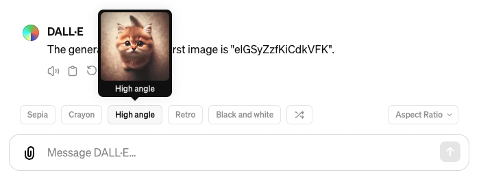

🏠 home > Tools
Dall-E 3 styles
Here is a list of styles which can be seen
in the
Dall-E 3 GPT.
When typing your prompt in Dall-E 3, there is a button you can click to choose a style. You can also simply type the style in yourself.

When typing your prompt in Dall-E 3, there is a button you can click to choose a style. You can also simply type the style in yourself.
🏠 home